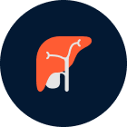

Liverok
научный подход к лечению печени
Liverok — инновационная разработка ученых из Университетской клиники Шарите, Берлин. Секрет препарата — в уникальной формуле растительных экстрактов, каждый из которых усиливает действие других.
Если не начать лечение печени вовремя, это может привести к таким ужасным патологиям, как гепатоз, гепатит, фиброз, цирроз, печеночная недостаточность и даже онкология.
Топ 5
смертельных болезней печени
за 2020 год
Количество смертельных случаев (млн)
Вирусные гепатиты
Цирроз печени
Жировая болезнь печени
Злокачественные опухоли
Гельминты печени
Liverok — инновационная разработка ученых из Университетской клиники Шарите, Берлин. Секрет препарата — в уникальной формуле растительных экстрактов, каждый из которых усиливает действие других.
от токсинов, жира, бактерий и вирусов
устойчивость к патологическим воздействиям
секрецию желчи и желчных кислот
функции печени при ее повреждениях
Руководитель отделения гастроэнтерологии и гепатологии. Клиника HELIOS Berlin-Zehlendorf
С современной экологией и ритмом жизни проблем с печенью не избежать. К счастью, уже существует средство, которое можно применять как для лечения болезней, так и для профилактики — растительные капли Liverok. Моя клиника участвовала в клинических испытаниях этого препарата, и я своими глазами видел, как улучшаются анализы пациентов и их общее самочувствие.


К сожалению, с этого IP-адреса в нашем магази не покупка не осуществлялась.
После того, как попробуете Liverok, возвращайтесь и поделитесь своим мнением!
-50% хочу